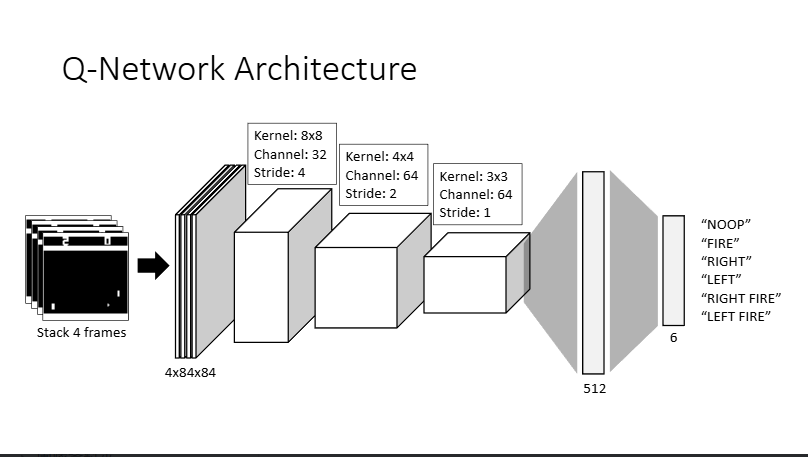

Deep Q-Network (DQN) & Double DQN 實作
本專案實作 Double DQN (DDQN) 模型來訓練 AI 遊玩 Atari 經典遊戲 Pong-v5。目標是讓 Agent 從原始像素畫面中學習，最終達到能穩定擊敗電腦的水平。
Atari 原始畫面（210x160 RGB）過於龐大。為了加速訓練，我進行了以下預處理：
# 像素處理示範
state = state.astype(np.float32).mean(2) / 255.0
state[state > th] = 1.0 # 二值化
state[state <= th] = 0.0採用卷積神經網路 (CNN) 作為特徵提取器，後接全連接層輸出各個動作的 Q-value。
傳統 DQN 常因同時使用同一組參數「選擇動作」與「評估價值」，導致嚴重的過度估計 (Overestimation) 問題。DDQN 透過分離這兩個過程來提升穩定性：
# 直接取 Target Net 的最大值
max_next_q = target_net(next_s).max(1)[0]
expected_q = r + gamma * max_next_q# 用 Eval Net 選動作，Target Net 算價值
best_a = eval_net(next_s).argmax(1)
next_q = target_net(next_s).gather(1, best_a)
expected_q = r + gamma * next_q使用 10,000 大小的 Replay Buffer，隨機採樣以打破資料間的相關性 (Temporal Correlation)。
訓練初期維持高探索率 ($\epsilon$)，隨步數增加進行線性衰減，在「探索」與「利用」間取得平衡。
Training Step: 716 / Episode
Final Reward: +11.0 (Stable Win)
經過長時間訓練後，Agent 已能精確預測球路，並透過快速移動球拍封鎖電腦的所有進攻。Loss 曲線顯示在 100 萬步後趨於穩定。
點擊下方按鈕查看完整的完整程式碼實作。
View on GitHub